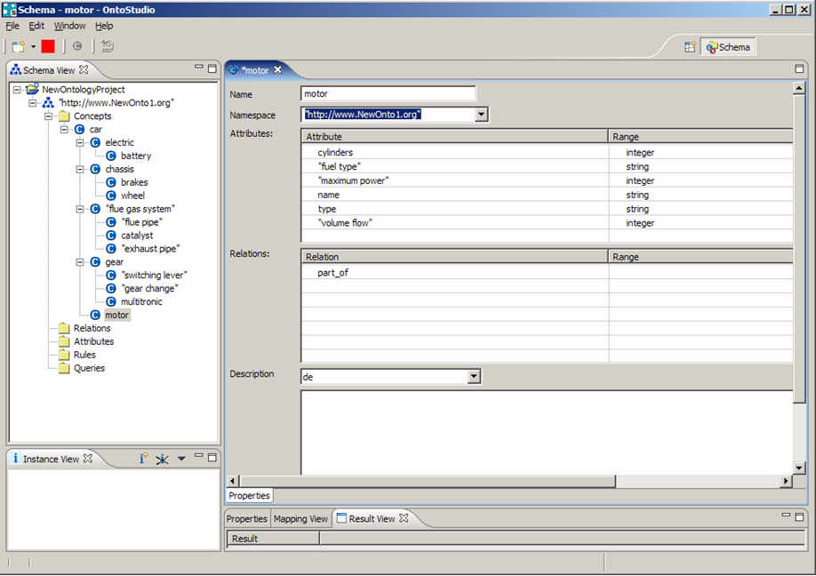
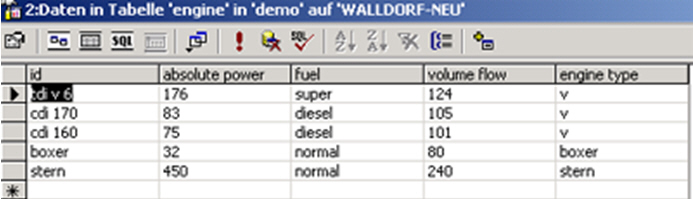
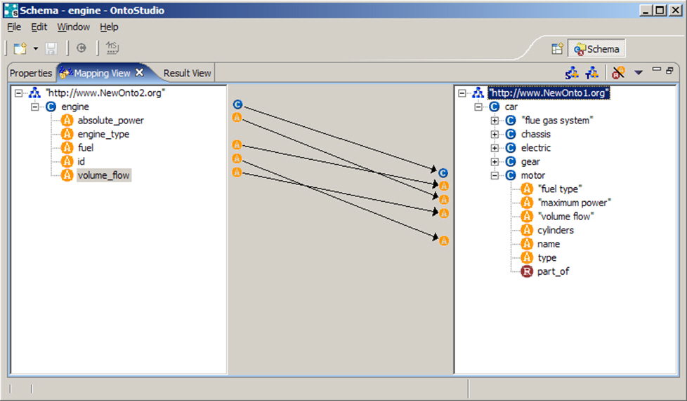

|

|
|
Integration Scenario |
|
|
|
|
Integration Scenario |
The scenario for this process was given by the business processes around the testing of cars. Our client has a fleet of test cars. These test cars are continuously reconfigured and then tested with this new configuration. Reconfiguration means changing the engine, changing the gear, changing the electric, i.e. changing all kinds of parts. For changing parts a lot of dependencies between these parts have to be taken into account. In many cases these dependencies are only known by certain human experts and thus require a lot of communication effort between different departments of the manufacturer, between the manufacturer and suppliers and between suppliers. Very often test cars have been configured which did not work or which hampered the measurement of the desired parameters. So, making such dependencies exploitable by computers allows for reducing the error rate in configuring test cars with a lower communication effort. The information on the car parts is stored in a considerable amount of databases filled by CAD-systems, measurement values, and so on, which have to be taken into account. These databases are fed by different tools in different departments. These databases have to be accessed during query-time to ensure the topicality of the data. During this project an ontology has been developed which serves as a communication medium between engineers, serves as a knowledge model representing these complex dependencies and serves as an integration model for different data sources. The following describes the last aspect in detail.
The Ontology
The base ontology very strongly relies on parts which are arranged in a part-of hierarchy and their properties. The instances, i.e. concrete values are most often gained from the parts list in the legacy systems.Our ontologies are represented in ObjectLogic. Specific basic concepts are represented as concepts in ObjectLogic and are arranged in an isa-hierarchy. Concepts may be described by attributes and relationships to other concepts.
component[
has_part {0:*} *=> component,
is_part {0:*} *=> component,
horsepower {0:1} *=> _integer].
// instances and relations
tdi_engine:component.
valve2:component.
pump3:component.
tdi_engine[
has_part->valve2,
has_part->pump3,horsepower->340].
//rules
@{isPart} ?Y[is_part->?X] :- ?X[has_part->?Y].
//queries
@{allComponents} ?- ?X:component.
In this example we have defined a component as a basic concept. A component has a relationship has_part to another component and an attribute horsepower. Then we create an instantiation of a component tdi_engine being a specific engine. Concrete instances valve2, pump3 are given for concept component. A rule is used to describe the inversity of has_part and is_part. With a query we ask for all of the components in the model. OntoBroker, our reasoning system, provides the means for efficient reasoning in ObjectLogic. OntoBroker performs a mixture of forward and backward chaining based on the dynamic filtering algorithm to compute (the smallest possible) subset of the model for answering the query. During forward chaining not only single tuples of variable instantiations but sets of such tuples are processed. It is well-known that set-oriented evaluation strategies are much more efficient than tuple oriented ones. The semantics for a set of ObjectLogic statements is then defined by a transformation process of ObjectLogic into normal logic (Horn logic with negation) and the well-founded semantics for the resulting set of facts and rules and axioms in normal logic.

An excerpt of that ontology is shown in a part-of view in our tool OntoStudio. For example, it shows that a gear is part of a car and the switching lever is a part of the gear. For the motor some attributes such as maximum power, type, and so on are shown. An ontology without rules describes only simple relationships between concepts like a part is a part of another part, a part is connected to another part, and so on. More complex relationships have to be described by rules and constraints.
Data Source Integration
Besides serving as a common communication language and representing expert knowledge in our scenario, ontologies serve as an integration means of different legacy systems. The ontology is used to reinterpret given information sources in a common language and thus provide a common and single view of different data sources. In our scenario, the components data and the configuration data is already handled comprehensively in different departments and in different information sources like CAD-, CAE- or CAT-systems or ERP/PPS-applications, databases, and so on. All of these IT systems accompany the whole PLM-process, beginning with the product design and ending with the product release. Our test configuration system, and hence our ontology system must access this live information to be up-to-date, avoid inconsistent data and avoid additional effort. An ontology could now collect these different sources and integrate them in a common logical model. This goes far beyond building just connectors between applications. The goal of integration is to consolidate distributed information intelligently, free of redundancy and provide users and applications with simple access to information without considering the underlying data structure or system. In our case we already have such a commonly accepted logical model: the automotive ontology. This ontology describes schema information and is not yet populated with instances. This means e.g. that there is a concept motor with attributes name, cylinders, type, and so on. But there is no information on concrete motors like TDI V6, with 6 cylinders, fuel type super, and so on, available. This is achieved by attaching the ontology to one or more of the existing information sources. In the following we exemplify the mapping to a relational database.
Database Schema Import
The first step in connecting an ontology to a database is to import the database schema and visualize it in our ontology management environment OntoStudio. Beneath relational database schemas, OntoStudio also has import filters for other schemas like RDF or OWL. In our example we will show the attachment of a database table motor to our ontology.

The database mapping imports the table engine as a concept, columns id, absolute_power, fuel, volume_flow and engine_type as attributes. This means that every row in the database corresponds to one object in the ontology. OntoStudio automatically creates a connection to the database by the dbaccessuser-connector (there are various connectors to information sources available). This built-in automatically creates a unique object ID. It is used in a rule which defines the access and the mapping to the ontology:
@{mappingRule}
?V_ID:Engine[ID->?V_ID, absolute_power->?V_ABSOLUTE_POWER, fuel->?V_FUEL,
volume_flow->?V_VOLUME_FLOW, engine_type->?V_FUEL_TYPE]
:-
_dbaccessuser("engine",
F( "id", ?V_ID, "absolute power", ?V_ABSOLUTE_POWER, "fuel", ?V_FUEL
"volume_flow", ?V_VOLUME_FLOW, "engine_type", ?V_ENGINE_TYPE),
"mydbconnection").
Ontology Mappings
After having imported the database schema, the result ontology can be mapped with another ontology. Below you can see how a concept-to-concept mapping connects the concept engine to the concept motor and, additionally, an attribute-to-attribute mapping from id in the database ontology to name in the new ontology.

Another important mapping type is the mapping of attributes to concepts. This results in the attribute value being used as a unique ID for an ontology instance. For example, mapping the ID of engine to the concept motor creates an object for every different ID.
Querying the Integration Ontology
Mappings can be defined to different RDBMS and also to web services at the same time. A query to the integration ontology is thus translated in real-time (via the mapping rules) into calls for appropriate access built-ins which in turn access the data sources (in case of an RDBMS via SQL queries) and translate the answers back into ObjectLogic. Hence a user or an application on top of the ontology requires only this single ontology view and with it single vocabulary to retrieve all of the necessary information. In our scenario different information sources contribute to the same ontology. For example, information on electronic parts is stored in other databases than information on mechanical parts. Information on the 3-D geometry of objects is separated from their mechanical properties, and so on.
How to Handle Inconsistencies
It is clear that in practice the different information sources contain redundant or even inconsistent information. For instance, in our scenario, car types have not been represented in a unique way. The assignment of properties to car types has been described with different keys for one and the same car type. For example, keys like A3/A4 have been used to describe common properties of two car types while unique properties have been assigned to the car type by a key A3. We again use rules and thus inferencing to solve such problems.
?T:Car[carType->?Type, has_part->?Part]
:- _dbaccessuser("car", F( "id", ?T, "part", ?Part),
"mydbconnection") and ?Type is ?T._split("/")._memberAt(0).
Conclusion
In a real-life industrial project, viz. in the automotive industry at a car manufacturer, we have shown that ontologies may very well be used to enhance business processes and to integrate different information sources. In our case the ontology represents knowledge about relationships between different parts which may automatically be exploited in configuring test cars. This reduces the communication effort between the mechanical engineers, and reduces the error rate in configuring test cars. For this task the ontology is attached to the legacy systems of the manufacturer and thus accesses up-to-date information about parts and configurations. We have shown that our ontology engineering environment OntoStudio supports not only the comfortable development of ontologies but, with the integrated mapping tool OntoMap, also an easy to learn tool for attaching ontologies to different information sources. Our SemanticGuide is based on our ontology run-time environment and inference engine OntoBroker which is based on ObjectLogic. This semantic guide accelerates the configuration of test cars at our customer and hence also accelerates the development of new cars. In the end, this reduces time-to-market.